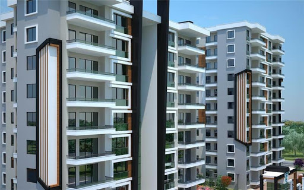
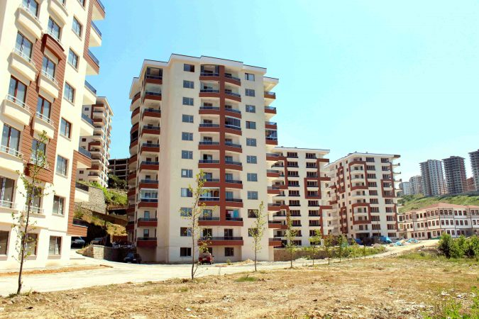
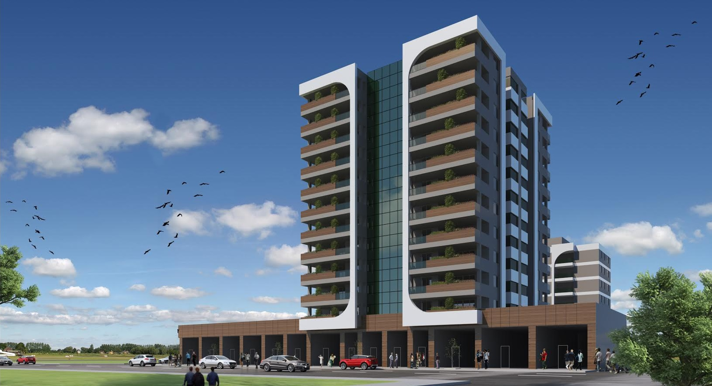

Şeker Evler Projesi

Şeker Evler 4. Etap Konutları toplam 32 blokta 1.396 konut, 50 cadde üstü dükkan ve 1 kreşten oluşuyor. Projede ortalama kat brüt alanları 86 metrelare olan 474 adet 2+1 açık mutfak, 92 metrekare olan 702 adet 2+1 kapalı mutfak, 111 metrekare olan 220 adet 3+1 daire tipleri yer alıyor.
Ödeme Seçenekleri
86 metrekarelik 2+1 açık mutfaklı daireler peşinde 227 bin 900 TL'ye alıcılara sunuluyor. Peşinat olarak konut bedelinin yüzde 20'sine tekabül eden 45 bin 580 TL ödeme yapılıyor. Kalan 182 bin 320 TL'lik bedel 120 ay vadelendiriliyor. Taksitler 2 bin 250 TL'den başlıyor.
92 metrekarelik 2+1 kapalı mutfaklı dairelerin peşin fiyatı 257 bin 600 TL. 51 bin 520 TL peşinat ödeniyor. Kalan 206 bin 80 TL'lik tutar 120 ay vadelendiriliyor. Aylık 2 bin 540 TL ödeme yapılıyor.
Yeşil Evler Projesi

Anadolu Yakası'nın gelişen yüzü Sultanbeyli'de yeni bir proje yükseliyor. Mimar Sinan Mahallesi sınırları içerisindeki yeni projenin adı "Yeşil Evler Projesi". 74 bin 351 metrekarelik arsa üzerine kurulu projede 620 konutun yanı sıra 7 adet de dükkan yer alıyor. Proje bünyesinde açık yüzme havuzları, sosyal tesis, spor ve piknik alanları, süs havuzu, açık ve kapalı otopark alanları bulunuyor.
Ödeme Seçenekleri
Krediye uygun durumda.86 metrekarelik 2+1 açık mutfaklı daireler peşinde 227 bin 900 TL'ye alıcılara sunuluyor. Peşinat olarak konut bedelinin yüzde 20'sine tekabül eden 45 bin 580 TL ödeme yapılıyor. Kalan 182 bin 320 TL'lik bedel 120 ay vadelendiriliyor. Taksitler 2 bin 250 TL'den başlıyor.
92 metrekarelik 2+1 kapalı mutfaklı dairelerin peşin fiyatı 257 bin 600 TL. 51 bin 520 TL peşinat ödeniyor. Kalan 206 bin 80 TL'lik tutar 120 ay vadelendiriliyor. Aylık 2 bin 540 TL ödeme yapılıyor.
Yaban Evler Projesi

Elif İnşaat imzası taşıyan Yaban Evler projesi Levent'te 1 dönümlük alanda yükseliyor. 15 katlı olarak planlanan blokta alanları 53 ile 130 metrekare arasında değişen 129 daire bulunuyor. Daireler 1+1 ve 2+1 olarak tasarlandı. Alya Teras'ta giriş katında 8 dükkan, en üst katında sosyal donatı olarak teras yer alıyor. Yatırımcılara farklı bir dinlenme alanı sunulan terasta yer alan gökyüzü yatakları ve şöminesiyle de hayatın her dakikasını daha da anlamlı hale getiriyor.
Ödeme Seçenekleri
Krediye uygun durumda.86 metrekarelik 2+1 açık mutfaklı daireler peşinde 227 bin 900 TL'ye alıcılara sunuluyor. Peşinat olarak konut bedelinin yüzde 20'sine tekabül eden 45 bin 580 TL ödeme yapılıyor.
Copyright İnsaatSirketi.com